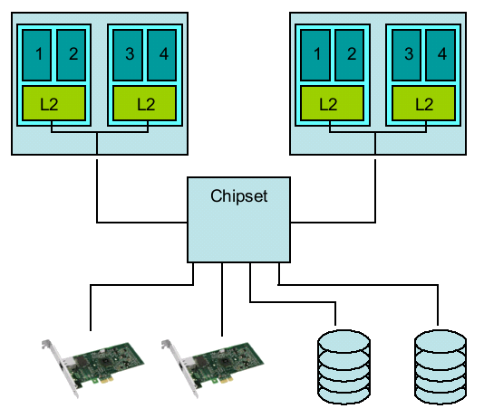
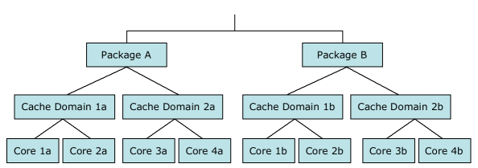
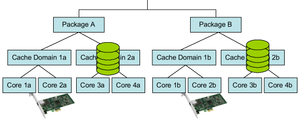
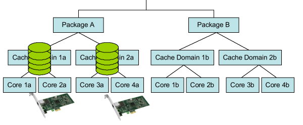

What / Why / How?
Few things about your PC are as boring as things that just work, invisible in the background. Interrupt balancing is one of those things, and even though it falls in this boring category, the Linux application that is in charge of this functionality was long overdue in getting a major overhaul. Intel rose to this task, and this article describes the goals, gains, and result.
What is Interrupt Balancing?
In order to explain what interrupt balancing is for, I need to first explain the following picture.

The picture shows a simplified schematic of a dual socket, quad core server with 2 disks and 2 network controllers. These 4 devices each have an interrupt line to the chipset. This interrupt line is used by the device to inform the system that they would like the attention of the operating system; for example, because a network packet came in, or because the disk has the data ready that the operating system asked for. The chipset then has the task to forward this interrupt to a specific core in one of the 2 sockets. The core in question will then invoke a part of the operating system that will deal with the device (by accepting the packet and then passing it on to the TCP/IP protocol stack for example). Intel chipsets (and similar chipsets from other vendors) use something akin to a table (it's programmed into a component called IO-APIC) for this, and this "table" maps specific interrupts to specific cores or sets of cores. The standard table in our hardware effectively maps all interrupts to core 1 of the first socket. While this works, it also means that under high utilization (for example, on a really busy network) this core gets to spend a disproportional amount of work on processing the interrupts.
It is the task of the interrupt balancing software to distribute this workload more evenly across the cores: to determine which interrupts should go to which core, and then fill this table for the chipset to use.
Naive balancing
A simple, naive way to solve the "one core gets to do all the work" problem is just to give the interrupts from the first device to core 1, the second one to core 2 and so on. However... this still can give problems: core 1 and core 2 share their cache in Intel's Quad Core processors and even share the link to the chipset (called FSB or Front Side Bus). Now interrupt 1 and 2 are from the network cards; if there is a lot of network traffic, the shared cache gets disproportionally burdened, as is the shared FSB bus. A much better distribution for this scenario would be to put the first network card on the first core of the leftmost socket, but the second network card on the first core of the rightmost socket. This example shows that something smarter than just a very naive method is needed to get a fair and performing distribution. Another aspect is that servers tend to be used in different ways over time: for example, while during business hours a server might be mostly using the network, at night it might be crunching on the daily report and using its disks. Both scenarios will have a different optimal interrupt distribution.X
Power meets Performance
In the previous section, a distribution was presented where each of the network cards sends their respective interrupts to a separate socket. Under a high network load, this will yield optimal fairness and highest performance. However, when network load is more moderate, and the system otherwise mostly idle, this means that both sockets get interrupts all the time (although at a moderate rate). This in turn means that both sockets get taken out of their power saving sleep modes: the fair distribution makes the processors use more power than would have been needed if the distribution was different!
A smart interrupt balancing program is capable of detecting when performance is paramount as well as detecting when it's not, and adjusting the interrupt distribution dynamically based on this. In addition, a smart interrupt balancing program is aware of which resources (cache, FSB, etc.) are shared by which cores, and tries to avoid bottlenecks on all of them.
The current Linux irqbalance program is several years old in design, and is blissfully unaware of the ideas of Quad (or even Dual) core or even power usage. The program is conceptually closer to the naive balancing than to the smart interrupt balancer.
The new irqbalance
As a first step, irqbalance collects the topology of the processors in the system, and creates a tree that represents packages, cache domains, and cores. In this context, a package is the "socket" and a cache domain is the set of cores in a socket that share the largest level cache. For the system that was shown earlier, this tree looks like this:
As the second step, the new irqbalance program assigns each interrupt source in the system to a "class." A class is a type of device, for example: Networking, Storage, Media, Legacy, or Timer. This classification allows irqbalance to apply different strategies to the interrupts of each of these classes. In addition to this class, irqbalance keeps trackXfor each interruptXwhich core or cores it was assigned to previously, which cores are close to the interrupt in a NUMA system, and what the rate of interrupts is that comes in. This interrupt rate is used as a proxy for the amount of work that is needed to service the device behind the interrupt.
Once all this data is collected, one final step is taken: irqbalance checks the system load statistics that Linux exports and in specific, it collects the amount of time spent that is reported to have been spent on servicing interrupts. If this amount of time spent on interrupts is low for some time, irqbalance decides to switch to power save mode, while if the amount of time spent is over some threshold, irqbalance will switch to performance mode.
With the power-or-performance mode selected, irqbalance has all the information it needs to start assigning the interrupts to cores. Irqbalance will start with the Networking class of interrupts, and then goes to the Storage class, and so on. This order is based on the performance sensitivity priority of these classes of interrupts. Within the class, the interrupt that has the highest activity rate is handled first.
As a first step, the interrupts are assigned to packages. In power save mode, all interrupts are assigned to the first package (to allow the other packages to stay in their respective sleep states longer), while in performance mode, irqbalance tries to spread the interrupts over the available packages as much as possible such that the cumulative amount of work that each package will do is made equal as much as possible. In addition, in performance mode, irqbalance will always distribute interrupts of the same class to different packages as long as there are not more interrupts in the class than there are packages. This is done to prevent one networking (or storage) interrupt from interfering with another interrupt in the same class via the sharing of resources that goes with being assigned to the same package. To make things even more complex, irqbalance also takes into account which package the interrupt was already assigned to previously and will try to keep the interrupt assigned to the same package (since there might be valuable data in the cache there already for the device). It also takes into account which packages are directly connected to the hardware in a NUMA system (since using a core with such a direct connection is going to be faster than using a core which has an indirect connection).
Once each interrupt is assigned to a package, the next step is to divide these interrupts up over the cache domains that are part of this package. This step is very similar to the previous step in that in this step the previous placements and NUMA affinity are taken account again. And just as with packages, an attempt is made to avoid getting same-class interrupts assigned to the same cache domain. However power-save mode is not taken into account since there are no power efficiencies to be gained by avoiding work in only parts of a package.
For the Networking interrupt class, it is essential that the interrupt goes to one and one core only. The implementation of the Linux TCP/IP stack will then use this property to get some major efficiencies in its operation. In addition, if an interrupt source of another class is very high rate, irqbalance will also assign this to a specific core in order to maximize the efficiency of the level 1 cache of this core. This assigning to the cores uses the same algorithm as the assignment to cache-domains.
For the hypothetical system that was shown before, the placement algorithm would have decided on the distribution as shown in the picture below:
Each of the 2 networking cards is assigned to a specific core in a different package, while the storage devices have their interrupts assigned also to separate packages, but within each package to another cache domain than the respective network controller is assigned to. The storage controllers will have their interrupt assigned to both cores in their respective cache domain; in the example I have assumed that the workloads that are caused by these storage adapters is below the threshold to trigger a direct assignment to a core and that the system is busy enough to use performance mode.
In power save mode, the distribution would have looked like this picture instead:
Here all interrupts are assigned to the first package, and each cache domain has a storage device and a networking device assigned to it. Each network device is then also specifically assigned to one core within its cache domain.